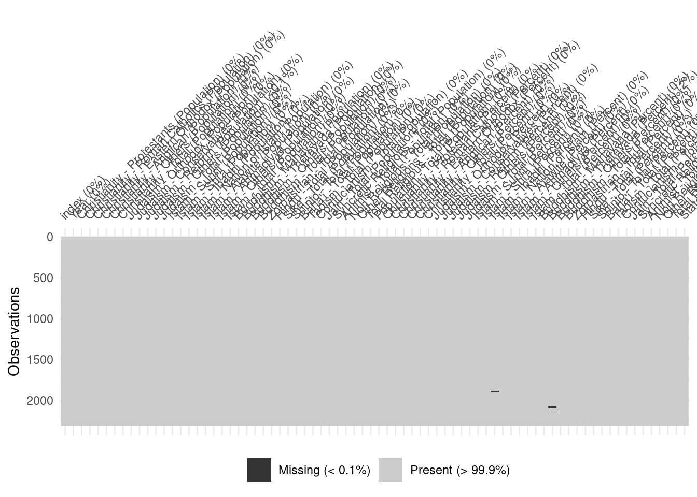
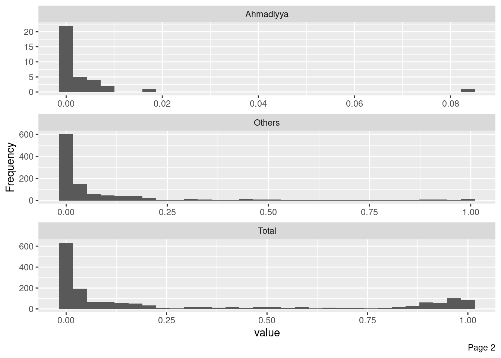

library(tidyverse)
library(visdat)
library(DataExplorer)
library(naniar)
library(janitor)
library(validate)
library(countrycode)EDA on islam religion growth worldwide
EDA
R
Exploring World Religion dataset to uncover the growth of Islam in various countries using R
Setup
df <- read_csv('./ThrowbackDataThursday 201912 - Religion.csv')Rows: 2308 Columns: 76
── Column specification ────────────────────────────────────────────────────────
Delimiter: ","
chr (1): StateNme
dbl (75): index, Year, Christianity - Protestants (Population), Christianity...
ℹ Use `spec()` to retrieve the full column specification for this data.
ℹ Specify the column types or set `show_col_types = FALSE` to quiet this message.Inspect Dataset
Understand the data
df# A tibble: 2,308 × 76
index Year `Christianity - Protestants (Population)` Christianity - Roman …¹
<dbl> <dbl> <dbl> <dbl>
1 0 1945 66069671 38716742
2 1 1950 73090083 42635882
3 2 1955 79294628 46402368
4 3 1960 90692928 50587880
5 4 1965 94165803 64761783
6 5 1970 93918347 69119143
7 6 1975 93578909 77181399
8 7 1980 101216516 75149580
9 8 1985 107309700 82463100
10 9 1990 132040181 65530789
# ℹ 2,298 more rows
# ℹ abbreviated name: ¹`Christianity - Roman Catholics (Population)`
# ℹ 72 more variables: `Christianity - Eastern Orthodox (Population)` <dbl>,
# `Christianity - Anglican (Population)` <dbl>,
# `Christianity - Others (Population)` <dbl>,
# `Christianity - Total (Population)` <dbl>,
# `Judaism - Orthodox (Population)` <dbl>, …df |> names() [1] "index"
[2] "Year"
[3] "Christianity - Protestants (Population)"
[4] "Christianity - Roman Catholics (Population)"
[5] "Christianity - Eastern Orthodox (Population)"
[6] "Christianity - Anglican (Population)"
[7] "Christianity - Others (Population)"
[8] "Christianity - Total (Population)"
[9] "Judaism - Orthodox (Population)"
[10] "Judaism - Conservatives (Population)"
[11] "Judaism - Reform (Population)"
[12] "Judaism - Others (Population)"
[13] "Judaism - Total (Population)"
[14] "Islam - Sunni (Population)"
[15] "Islam - Shi'a (Population)"
[16] "Islam - Ibadhi (Population)"
[17] "Islam - Nation of Islam (Population)"
[18] "Islam - Alawite (Population)"
[19] "Islam - Ahmadiyya (Population)"
[20] "Islam - Others (Population)"
[21] "Islam - Total (Population)"
[22] "Buddhism - Mahayana (Population)"
[23] "Buddhism - Theravada (Population)"
[24] "Buddhism - Others (Population)"
[25] "Buddhism - Total (Population)"
[26] "Zoroastrian - Total (Population)"
[27] "Hindu - Total (Population)"
[28] "Sike - Total (Population)"
[29] "Shinto - Total (Population)"
[30] "Baha'i - Total (Population)"
[31] "Taoism - Total (Population)"
[32] "Confucianism - Total (Population)"
[33] "Jain - Total (Population)"
[34] "Syncretic Religions - Total (Population)"
[35] "Animist - Total (Population)"
[36] "Non Religious - Total (Population)"
[37] "Other Religions - Total (Population)"
[38] "Total Religious - Total (Population)"
[39] "Population - Total (Population)"
[40] "Christianity - Protestants (Percent)"
[41] "Christianity - Roman Catholics (Percent)"
[42] "Christianity - Eastern Orthodox (Percent)"
[43] "Christianity - Anglican (Percent)"
[44] "Christianity - Others (Percent)"
[45] "Christianity - Total (Percent)"
[46] "Judaism - Orthodox (Percent)"
[47] "Judaism - Conservatives (Percent)"
[48] "Judaism - Reform (Percent)"
[49] "Judaism - Others (Percent)"
[50] "Judaism - Total (Percent)"
[51] "Islam - Sunni (Percent)"
[52] "Islam - Shi'a (Percent)"
[53] "Islam - Ibadhi (Percent)"
[54] "Islam - Nation of Islam (Percent)"
[55] "Islam - Alawite (Percent)"
[56] "Islam - Ahmadiyya (Percent)"
[57] "Islam - Others (Percent)"
[58] "Islam - Total (Percent)"
[59] "Buddhism - Mahayana (Percent)"
[60] "Buddhism - Theravada (Percent)"
[61] "Buddhism - Others (Percent)"
[62] "Buddhism - Total (Percent)"
[63] "Zoroastrian - Total (Percent)"
[64] "Hindu - Total (Percent)"
[65] "Sike - Total (Percent)"
[66] "Shinto - Total (Percent)"
[67] "Baha'i - Total (Percent)"
[68] "Taoism - Total (Percent)"
[69] "Confucianism - Total (Percent)"
[70] "Jain - Total (Percent)"
[71] "Syncretic Religions - Total (Percent)"
[72] "Animist - Total (Percent)"
[73] "Non Religious - Total (Percent)"
[74] "Other Religions - Total (Percent)"
[75] "Total Religious - Total (Percent)"
[76] "StateNme" Check Data Quality
Missing Values
df |>
vis_miss()
df |>
vis_expect(function(x) x != 0)df |>
replace_with_na_all(~ . == 0) |>
vis_miss()
Total Population Columns
df |>
select(contains('Total') & contains('Population')) |>
rename_with(function(x) str_remove(x, ' - Total \\(Population\\)')) |>
replace_with_na_all(~ . == 0) |>
vis_miss(sort_miss = TRUE)Total Percent Columns
df |>
select(contains('Total') & contains('Percent')) |>
rename_with(function(x) str_remove(x, ' - Total \\(Percent\\)')) |>
replace_with_na_all(~ . == 0) |>
vis_miss(sort_miss = TRUE)Population but Non Total columns
df |>
select(-contains('Total') & contains('Population')) |>
rename_with(function(x) str_remove(x, ' \\(Population\\)')) |>
replace_with_na_all(~ . == 0) |>
vis_miss(sort_miss = TRUE)Clean Data
Pick relevant columns
df_islam <- df |>
select(Country = StateNme, Year, starts_with('Islam'))
df_islam# A tibble: 2,308 × 18
Country Year Islam - Sunni (Popula…¹ Islam - Shi'a (Popul…²
<chr> <dbl> <dbl> <dbl>
1 United States of America 1945 0 0
2 United States of America 1950 0 0
3 United States of America 1955 0 0
4 United States of America 1960 0 0
5 United States of America 1965 0 0
6 United States of America 1970 0 0
7 United States of America 1975 0 0
8 United States of America 1980 2407464 254121
9 United States of America 1985 2186675 298183
10 United States of America 1990 2019386 275371
# ℹ 2,298 more rows
# ℹ abbreviated names: ¹`Islam - Sunni (Population)`,
# ²`Islam - Shi'a (Population)`
# ℹ 14 more variables: `Islam - Ibadhi (Population)` <dbl>,
# `Islam - Nation of Islam (Population)` <dbl>,
# `Islam - Alawite (Population)` <dbl>,
# `Islam - Ahmadiyya (Population)` <dbl>, …Check Data type
df_islam |>
str()tibble [2,308 × 18] (S3: tbl_df/tbl/data.frame)
$ Country : chr [1:2308] "United States of America" "United States of America" "United States of America" "United States of America" ...
$ Year : num [1:2308] 1945 1950 1955 1960 1965 ...
$ Islam - Sunni (Population) : num [1:2308] 0 0 0 0 0 ...
$ Islam - Shi'a (Population) : num [1:2308] 0 0 0 0 0 ...
$ Islam - Ibadhi (Population) : num [1:2308] 0 0 0 0 0 0 0 0 0 0 ...
$ Islam - Nation of Islam (Population): num [1:2308] 0 0 0 0 0 0 0 0 0 0 ...
$ Islam - Alawite (Population) : num [1:2308] 0 0 0 0 0 0 0 0 0 0 ...
$ Islam - Ahmadiyya (Population) : num [1:2308] 0 0 0 0 0 ...
$ Islam - Others (Population) : num [1:2308] 0 0 0 0 0 0 0 0 0 0 ...
$ Islam - Total (Population) : num [1:2308] 0 0 0 0 0 ...
$ Islam - Sunni (Percent) : num [1:2308] 0 0 0 0 0 0 0 0.0106 0.0092 0.0081 ...
$ Islam - Shi'a (Percent) : num [1:2308] 0 0 0 0 0 0 0 0.0011 0.0013 0.0011 ...
$ Islam - Ibadhi (Percent) : num [1:2308] 0 0 0 0 0 0 0 0 0 0 ...
$ Islam - Nation of Islam (Percent) : num [1:2308] 0 0 0 0 0 0 0 0 0 0 ...
$ Islam - Alawite (Percent) : num [1:2308] 0 0 0 0 0 0 0 0 0 0 ...
$ Islam - Ahmadiyya (Percent) : num [1:2308] 0 0 0 0 0 0 0 0 0 0 ...
$ Islam - Others (Percent) : num [1:2308] 0 0 0 0 0 0 0 0 0 0 ...
$ Islam - Total (Percent) : num [1:2308] 0 0 0 0 0 0 0 0.0117 0.0104 0.0092 ...Fix Data Types
df_islam_correct_type <- df_islam |>
mutate(Country = as_factor(Country))Check Duplicate
df_islam_correct_type |> names() [1] "Country"
[2] "Year"
[3] "Islam - Sunni (Population)"
[4] "Islam - Shi'a (Population)"
[5] "Islam - Ibadhi (Population)"
[6] "Islam - Nation of Islam (Population)"
[7] "Islam - Alawite (Population)"
[8] "Islam - Ahmadiyya (Population)"
[9] "Islam - Others (Population)"
[10] "Islam - Total (Population)"
[11] "Islam - Sunni (Percent)"
[12] "Islam - Shi'a (Percent)"
[13] "Islam - Ibadhi (Percent)"
[14] "Islam - Nation of Islam (Percent)"
[15] "Islam - Alawite (Percent)"
[16] "Islam - Ahmadiyya (Percent)"
[17] "Islam - Others (Percent)"
[18] "Islam - Total (Percent)" Check duplicate Year
df_islam_correct_type |>
get_dupes() |>
relocate(dupe_count)No variable names specified - using all columns.# A tibble: 626 × 19
dupe_count Country Year `Islam - Sunni (Population)` Islam - Shi'a (Popula…¹
<int> <fct> <dbl> <dbl> <dbl>
1 2 Cuba 1945 0 0
2 2 Cuba 1945 0 0
3 2 Cuba 1950 0 0
4 2 Cuba 1950 0 0
5 2 Cuba 1955 0 0
6 2 Cuba 1955 0 0
7 2 Cuba 1960 0 0
8 2 Cuba 1960 0 0
9 2 Cuba 1965 0 0
10 2 Cuba 1965 0 0
# ℹ 616 more rows
# ℹ abbreviated name: ¹`Islam - Shi'a (Population)`
# ℹ 14 more variables: `Islam - Ibadhi (Population)` <dbl>,
# `Islam - Nation of Islam (Population)` <dbl>,
# `Islam - Alawite (Population)` <dbl>,
# `Islam - Ahmadiyya (Population)` <dbl>,
# `Islam - Others (Population)` <dbl>, `Islam - Total (Population)` <dbl>, …df_islam_correct_type |>
count(Year, Country) |>
arrange(desc(n)) |>
count(n)Storing counts in `nn`, as `n` already present in input
ℹ Use `name = "new_name"` to pick a new name.# A tibble: 2 × 2
n nn
<int> <int>
1 1 1682
2 2 313Remove duplicate using distinct()
df_islam |>
nrow()[1] 2308df_islam_correct_type |>
distinct() |>
nrow()[1] 1995df_islam_removedduplicate <- df_islam_correct_type |>
distinct()Normalize Dataframe
Remove redundant ‘Islam’
df_islam_columns_renamed <- df_islam_removedduplicate |>
rename_with(function(x) str_remove(x, 'Islam - '),
starts_with('Islam'))Check Missing Value
df_islam_columns_renamed |>
vis_miss()df_islam_replacedna <- df_islam_columns_renamed |>
mutate(across(everything(), function(x) replace_na(x, 0)))
df_islam_replacedna |>
vis_miss()Check Zero Distribution (Possible Null Value)
df_islam_replacedna |>
select(!Country) |>
vis_expect(function(x) x != 0)Replace zero with NA
df_islam_replacedzero <- df_islam_replacedna |>
mutate(across(everything(), function(x) if_else(x == 0, NA, x)))Check Missing Value (Second Stage)
df_islam_replacedzero |>
miss_var_summary()# A tibble: 18 × 3
variable n_miss pct_miss
<chr> <int> <num>
1 Nation of Islam (Population) 1995 100
2 Ibadhi (Percent) 1995 100
3 Nation of Islam (Percent) 1995 100
4 Ibadhi (Population) 1985 99.5
5 Alawite (Population) 1974 98.9
6 Alawite (Percent) 1974 98.9
7 Ahmadiyya (Percent) 1960 98.2
8 Ahmadiyya (Population) 1953 97.9
9 Shi'a (Population) 1639 82.2
10 Shi'a (Percent) 1639 82.2
11 Sunni (Percent) 1422 71.3
12 Sunni (Population) 1421 71.2
13 Others (Percent) 879 44.1
14 Others (Population) 856 42.9
15 Total (Percent) 354 17.7
16 Total (Population) 329 16.5
17 Country 0 0
18 Year 0 0 df_islam_replacedzero |>
gg_miss_var()df_islam_replacedzero# A tibble: 1,995 × 18
Country Year `Sunni (Population)` `Shi'a (Population)` `Ibadhi (Population)`
<fct> <dbl> <dbl> <dbl> <dbl>
1 United… 1945 NA NA NA
2 United… 1950 NA NA NA
3 United… 1955 NA NA NA
4 United… 1960 NA NA NA
5 United… 1965 NA NA NA
6 United… 1970 NA NA NA
7 United… 1975 NA NA NA
8 United… 1980 2407464 254121 NA
9 United… 1985 2186675 298183 NA
10 United… 1990 2019386 275371 NA
# ℹ 1,985 more rows
# ℹ 13 more variables: `Nation of Islam (Population)` <dbl>,
# `Alawite (Population)` <dbl>, `Ahmadiyya (Population)` <dbl>,
# `Others (Population)` <dbl>, `Total (Population)` <dbl>,
# `Sunni (Percent)` <dbl>, `Shi'a (Percent)` <dbl>, `Ibadhi (Percent)` <dbl>,
# `Nation of Islam (Percent)` <dbl>, `Alawite (Percent)` <dbl>,
# `Ahmadiyya (Percent)` <dbl>, `Others (Percent)` <dbl>, …df_islam_replacedzero |>
gg_miss_upset()Check Data Constrains
Check Country Names
Exact Check
valid_countries <- codelist$country.name.en
df_country_only <- df_islam |>
distinct(Country)
validation_rules_country <- validator(
Country %in% valid_countries
)
cf_country <- confront(df_country_only, validation_rules_country)summary(cf_country) name items passes fails nNA error warning expression
1 V1 200 184 16 0 FALSE FALSE Country %vin% valid_countriesinvalid_country <- violating(df_country_only, cf_country) |>
arrange(Country) |>
pull(Country)
invalid_country [1] "Bosnia and Herzegovina" "Congo"
[3] "Czech Republic" "Democratic Republic of the Congo"
[5] "East Timor" "Federated States of Micronesia"
[7] "German Federal Republic" "Ivory Coast"
[9] "Macedonia" "Myanmar"
[11] "Sao Tome and Principe" "St. Kitts and Nevis"
[13] "St. Vincent and the Grenadines" "Swaziland"
[15] "Trinidad and Tobago" "United States of America" Automated Check by countrycode Package
tibble(invalid_country_name = invalid_country,
converted_country_name = countryname(invalid_country))# A tibble: 16 × 2
invalid_country_name converted_country_name
<chr> <chr>
1 Bosnia and Herzegovina Bosnia & Herzegovina
2 Congo Congo - Brazzaville
3 Czech Republic Czechia
4 Democratic Republic of the Congo Congo - Kinshasa
5 East Timor Timor-Leste
6 Federated States of Micronesia Micronesia (Federated States of)
7 German Federal Republic Germany
8 Ivory Coast Côte d’Ivoire
9 Macedonia North Macedonia
10 Myanmar Myanmar (Burma)
11 Sao Tome and Principe São Tomé & Príncipe
12 St. Kitts and Nevis St. Kitts & Nevis
13 St. Vincent and the Grenadines St. Vincent & Grenadines
14 Swaziland Eswatini
15 Trinidad and Tobago Trinidad & Tobago
16 United States of America United States Correct Country Names
df_islam_correct_country <- df_islam_replacedzero |>
mutate(Country = countryname(Country))Check Integers
validation_rules_integer <- validator(
`Sunni (Population)` %% 1 == 0,
`Shi'a (Population)` %% 1 == 0,
`Ibadhi (Population)` %% 1 == 0,
`Nation of Islam (Population)` %% 1 == 0,
`Alawite (Population)` %% 1 == 0,
`Ahmadiyya (Population)` %% 1 == 0,
`Others (Population)` %% 1 == 0,
`Total (Population)` %% 1 == 0
)
cf_integer <- confront(df_islam_correct_country, validation_rules_integer)
summary(cf_integer) name items passes fails nNA error warning
1 V1 1995 574 0 1421 FALSE FALSE
2 V2 1995 356 0 1639 FALSE FALSE
3 V3 1995 10 0 1985 FALSE FALSE
4 V4 1995 0 0 1995 FALSE FALSE
5 V5 1995 21 0 1974 FALSE FALSE
6 V6 1995 42 0 1953 FALSE FALSE
7 V7 1995 1139 0 856 FALSE FALSE
8 V8 1995 1666 0 329 FALSE FALSE
expression
1 `Sunni (Population)`%%1 == 0
2 `Shi'a (Population)`%%1 == 0
3 `Ibadhi (Population)`%%1 == 0
4 `Nation of Islam (Population)`%%1 == 0
5 `Alawite (Population)`%%1 == 0
6 `Ahmadiyya (Population)`%%1 == 0
7 `Others (Population)`%%1 == 0
8 `Total (Population)`%%1 == 0Check Decimals
validation_rules_decimal <- validator(
`Sunni (Percent)` %% 1 > 0,
`Shi'a (Percent)` %% 1 > 0,
`Ibadhi (Percent)` %% 1 > 0,
`Nation of Islam (Percent)` %% 1 > 0,
`Alawite (Percent)` %% 1 > 0,
`Ahmadiyya (Percent)` %% 1 > 0,
`Others (Percent)` %% 1 > 0,
`Total (Percent)` %% 1 > 0
)
cf_decimal <- confront(df_islam_correct_country,validation_rules_decimal)
summary(cf_decimal) name items passes fails nNA error warning expression
1 V1 1995 571 2 1422 FALSE FALSE `Sunni (Percent)`%%1 > 0
2 V2 1995 356 0 1639 FALSE FALSE `Shi'a (Percent)`%%1 > 0
3 V3 1995 0 0 1995 FALSE FALSE `Ibadhi (Percent)`%%1 > 0
4 V4 1995 0 0 1995 FALSE FALSE `Nation of Islam (Percent)`%%1 > 0
5 V5 1995 21 0 1974 FALSE FALSE `Alawite (Percent)`%%1 > 0
6 V6 1995 35 0 1960 FALSE FALSE `Ahmadiyya (Percent)`%%1 > 0
7 V7 1995 1116 0 879 FALSE FALSE `Others (Percent)`%%1 > 0
8 V8 1995 1635 6 354 FALSE FALSE `Total (Percent)`%%1 > 0violating(df_islam_correct_country |>
select(Country, Year, contains('Percent')),
cf_decimal)# A tibble: 6 × 10
Country Year `Sunni (Percent)` `Shi'a (Percent)` `Ibadhi (Percent)`
<chr> <dbl> <dbl> <dbl> <dbl>
1 Yemen 2000 0.69 0.31 NA
2 Yemen People's R… 1970 1 NA NA
3 Yemen People's R… 1975 1 NA NA
4 Qatar 1970 0.9 0.1 NA
5 Oman 1970 0.498 NA NA
6 Oman 1975 0.5 NA NA
# ℹ 5 more variables: `Nation of Islam (Percent)` <dbl>,
# `Alawite (Percent)` <dbl>, `Ahmadiyya (Percent)` <dbl>,
# `Others (Percent)` <dbl>, `Total (Percent)` <dbl>Check Record Completeness
By Year
df_islam_replacedzero |>
ggplot(aes(Year)) +
geom_line(stat = 'count') +
geom_point(stat='count') +
scale_x_continuous(breaks = seq(1945, 2010, by=5))By Country
df_islam_replacedzero |>
distinct(Country) |>
nrow()[1] 200Country Per Year
df_islam_year_data <- df_islam_replacedzero |>
count(Country) |>
count(n) |>
arrange(desc(nn)) |>
rename('Year Data Availibility' = n, 'Total Country' = nn)Storing counts in `nn`, as `n` already present in input
ℹ Use `name = "new_name"` to pick a new name.df_islam_year_data |>
ggplot(aes(`Year Data Availibility`, `Total Country`)) +
geom_col() +
scale_x_continuous(breaks = seq(1:14))validation_rules_year <- validator(
contains_at_least(
keys = data.frame(Year = seq(1945, 2010, by=5)),
by=list(Country) )
)
cf_year <- confront(df_islam_replacedzero, validation_rules_year)
summary(cf_year) name items passes fails nNA error warning
1 V1 1995 868 1127 0 FALSE FALSE
expression
1 contains_at_least(keys = data.frame(Year = seq(1945, 2010, by = 5)), by = list(Country))incomplete_country <- violating(df_islam_replacedzero, cf_year) |>
select(Country, Year)Check Year Gap
incomplete_country |>
group_by(Country) |>
mutate(lagged_Year = lag(Year, default = first(Year))) |>
mutate(Year_Gap = Year -lagged_Year) |>
ggplot(aes(Year_Gap)) +
geom_bar() +
scale_x_continuous(breaks = seq(0,100, by=5))Average Starting Year
df_islam_replacedzero |>
select(Country, Year) |>
group_by(Country) |>
slice(1) |>
ggplot(aes(Year)) +
geom_bar() +
scale_x_continuous(breaks = seq(1945, 2010, by=5))Average Final Year
df_islam_final_year_count <- df_islam_replacedzero |>
select(Country, Year) |>
group_by(Country) |>
slice_tail() |>
ungroup() |>
count(Year)
df_islam_final_year_count# A tibble: 4 × 2
Year n
<dbl> <int>
1 1970 1
2 1985 1
3 1990 4
4 2010 194df_islam_final_year_count |>
ggplot(aes(Year, n)) +
geom_col()Normalize Dataframe
Separate Population from Percent columns
df_islam_population <- df_islam_correct_country |>
select(Country, Year, contains('Population')) |>
rename_with(function(x) str_remove(x, ' \\(Population\\)'),
contains('Population'))
df_islam_population# A tibble: 1,995 × 10
Country Year Sunni `Shi'a` Ibadhi `Nation of Islam` Alawite Ahmadiyya
<chr> <dbl> <dbl> <dbl> <dbl> <dbl> <dbl> <dbl>
1 United Stat… 1945 NA NA NA NA NA NA
2 United Stat… 1950 NA NA NA NA NA NA
3 United Stat… 1955 NA NA NA NA NA NA
4 United Stat… 1960 NA NA NA NA NA NA
5 United Stat… 1965 NA NA NA NA NA NA
6 United Stat… 1970 NA NA NA NA NA NA
7 United Stat… 1975 NA NA NA NA NA NA
8 United Stat… 1980 2407464 254121 NA NA NA 4975
9 United Stat… 1985 2186675 298183 NA NA NA NA
10 United Stat… 1990 2019386 275371 NA NA NA NA
# ℹ 1,985 more rows
# ℹ 2 more variables: Others <dbl>, Total <dbl>df_islam_percent <- df_islam_correct_country |>
select(Country, Year, contains('Percent')) |>
rename_with(function(x) str_remove(x, ' \\(Percent\\)'),
contains('Percent'))
df_islam_percent# A tibble: 1,995 × 10
Country Year Sunni `Shi'a` Ibadhi `Nation of Islam` Alawite Ahmadiyya
<chr> <dbl> <dbl> <dbl> <dbl> <dbl> <dbl> <dbl>
1 United Stat… 1945 NA NA NA NA NA NA
2 United Stat… 1950 NA NA NA NA NA NA
3 United Stat… 1955 NA NA NA NA NA NA
4 United Stat… 1960 NA NA NA NA NA NA
5 United Stat… 1965 NA NA NA NA NA NA
6 United Stat… 1970 NA NA NA NA NA NA
7 United Stat… 1975 NA NA NA NA NA NA
8 United Stat… 1980 0.0106 0.0011 NA NA NA NA
9 United Stat… 1985 0.0092 0.0013 NA NA NA NA
10 United Stat… 1990 0.0081 0.0011 NA NA NA NA
# ℹ 1,985 more rows
# ℹ 2 more variables: Others <dbl>, Total <dbl>Check Sanity
Check whether Total value equals to all the other columns combined
Population
df_islam_population_total_check <- df_islam_population |>
mutate(Total_Recheck = rowSums(across(-c(Country, Year, Total)), na.rm = TRUE)) |>
mutate(Total_Recheck = if_else(Total_Recheck == 0, NA, Total_Recheck)) |>
relocate(Total, Total_Recheck, .after = Year)
validation_rules_total_population <- validator(Total == Total_Recheck)
cf_total_population <- confront(df_islam_population_total_check, validation_rules_total_population)
summary(cf_total_population) name items passes fails nNA error warning expression
1 V1 1995 1663 3 329 FALSE FALSE abs(Total - Total_Recheck) <= 1e-08violating(df_islam_population_total_check, cf_total_population)# A tibble: 3 × 11
Country Year Total Total_Recheck Sunni `Shi'a` Ibadhi `Nation of Islam`
<chr> <dbl> <dbl> <dbl> <dbl> <dbl> <dbl> <dbl>
1 Burkina Fa… 2010 9.02e6 9023118 8.88e6 140256 NA NA
2 Kenya 2010 4.20e6 4198089 3.99e6 209904 NA NA
3 Tanzania 2010 1.55e7 15505202 1.37e7 1768358 NA NA
# ℹ 3 more variables: Alawite <dbl>, Ahmadiyya <dbl>, Others <dbl>Percent
df_islam_percent_total_check <- df_islam_percent |>
mutate(Total_Recheck = rowSums(across(-c(Country, Year, Total)), na.rm = TRUE)) |>
mutate(Total_Recheck = if_else(Total_Recheck == 0, NA, Total_Recheck)) |>
relocate(Total, Total_Recheck, .after = Year)
validation_rules_total_percent <- validator(Total == Total_Recheck)
cf_total_percent <- confront(df_islam_percent_total_check, validation_rules_total_percent)
summary(cf_total_percent) name items passes fails nNA error warning expression
1 V1 1995 1566 75 354 FALSE FALSE abs(Total - Total_Recheck) <= 1e-08violating(df_islam_percent_total_check, cf_total_percent)# A tibble: 75 × 11
Country Year Total Total_Recheck Sunni `Shi'a` Ibadhi `Nation of Islam`
<chr> <dbl> <dbl> <dbl> <dbl> <dbl> <dbl> <dbl>
1 United S… 1985 0.0104 0.0105 0.0092 0.0013 NA NA
2 Canada 1980 0.0072 0.0071 0.0064 0.0007 NA NA
3 Canada 1995 0.0043 0.0042 0.0038 0.0004 NA NA
4 Suriname 1975 0.196 0.196 NA NA NA NA
5 United K… 1980 0.0147 0.0148 NA NA NA NA
6 Luxembou… 2010 0.02 0.0201 0.0181 0.002 NA NA
7 France 2000 0.0753 0.0754 0.0669 0.0085 NA NA
8 Germany 2010 0.049 0.0489 0.0355 0.0034 NA NA
9 Yugoslav… 2010 0.031 0.0311 0.0264 0.0047 NA NA
10 Sweden 1980 0.001 0.0009 NA NA NA NA
# ℹ 65 more rows
# ℹ 3 more variables: Alawite <dbl>, Ahmadiyya <dbl>, Others <dbl>Check Distribution
Population
df_islam_population |>
plot_histogram(ncol = 1)Percent
df_islam_percent |>
plot_histogram(ncol = 1)
Cleaning Summary
Verified Values
- All Population columns are integers
- All Percentage columns are decimals
- No missing year records in-between. For example: 1945, 1950, 1960 (missing 1955)
Total Populationcolumn is equal to otherPopulationcolumns combinedTotal Percentcolumn is equal to otherPercentcolumns combined
Changes Applied
- Removed 58 irrelevant columns
- Corrected 1 column’s data type
- Removed 303 duplicate rows
- Replaced all
0values (71% of all data) withNA - Corrected 16 countries’ names
- Separate Population and Percent columns into two dataframes.
- Remove ‘Islam -’ prefix and ‘(Population)’/‘(Percent)’ suffix
Other findings
- Extremely high prevalence of missing values.
- The majority of countries (60) have complete records from 1945 to 2010. But the rest vary. Ranging from only having 1 to 14 records.
- Despite point 1, nearly all countries have record of 2010, 2005, 2000, and so on. So, the missing records started from the bottom.
Next Steps
The plan was to analyze the growth of islam worldwide. However, the prevalenece of missing values are concerning. Most non-null values come from Sunni and Others category. So, it’s better to just use the Total column.
If you look at the data quality check at the beginning, Islam is actually the least variable with missing values. Other religions are even more dominated by missing values. This reduces the credibility of the data itself. Although, it wasn’t clearly mentioned what’s the data source anyway.
I can continue analyzing with just focusing on the overall Islam growth, but I doubt the finding would be trustworthy. For now, let’s convert the latest data frame into csv for later analysis. I’m thinking of uploading it to Tableau for easier exploration.
Export to CSV for further analysis
df_islam_population |>
write_csv('dataset_islam_population.csv')
df_islam_percent |>
write_csv('dataset_islam_percent.csv')